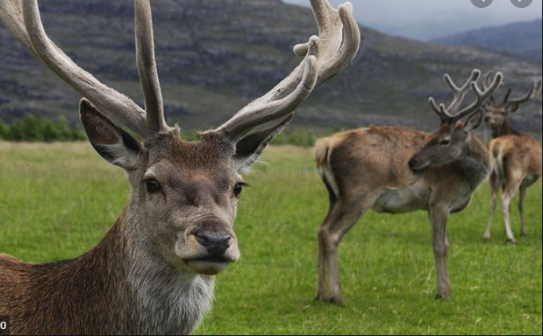
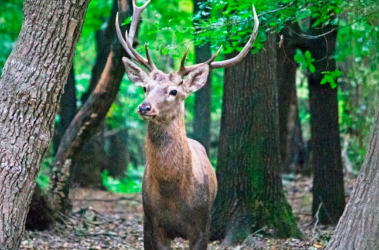
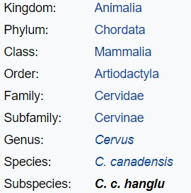

The Kashmir stag (Cervus canadensis hanglu), also called hangul, is a subspecies of elk native to Kashmir. It is found in dense riverine forests in the high valleys and mountains of the Kashmir Valley and northern Chamba district in Himachal Pradesh. In Kashmir, it is found in the Dachigam National Park where it receives protection but elsewhere it is more at risk. In the 1940s, the population was between 3000 and 5000 individuals, but since then habitat destruction, over-grazing by domestic livestock and poaching have reduced population dramatically. Earlier believed to be a subspecies of red deer (Cervus elaphus), a number of mitochondrial DNA genetic studies have revealed that the hangul is part of the Asian clade of the elk (Cervus canadensis). The IUCN, however, includes it in the new grouping of Central Asian red deer (Cervus hanglu), with the Kashmir stag being the type subspecies (Cervus hanglu hanglu). According to the census in 2019, there were only 237 Hanguls.
This deer lives in groups of two to 18 individuals in dense riverine forests, high valleys, and mountains of the Kashmir valley and northern Chamba in Himachal Pradesh. In Kashmir, it's found in the Dachigam National Park (and its nearby areas at elevations of 3,035 meters), Rajparian Wildlife Sanctuary, Overa Aru, Sind Valley, and in the forests of Kishtwar & Bhaderwah.
The Hangul diet constituted mainly of dicotyledonous shrubs and trees (45.45 and 80.77%), forbs/herbs (36.36 and 19.23%), monocotyledon grasses and herbs (18.18 and 16.22%) in spring and winter, respectively. Summer diet comprised 42.86% forbs, 19.05% grass/sedges and 38.10% browses. In autumn, Hangul fed mainly on dicotyledonous shrubs. The habitat use patterns of Hangul are comparable with those of the European red deer and are influenced by availability of food, cover, shelter, altitude, slope, aspect and the level of disturbance. The habitats with ideal conditions for utilization but with a meager disturbance were avoided by Hangul.
Poaching, population inbreeding and predation by leopard are the main biological factors responsible for decline of Hangul population. Several govt departments like sheep breeding farm ,fisheries department ,water works and irrigation are also thought to pose threat to Hangul.